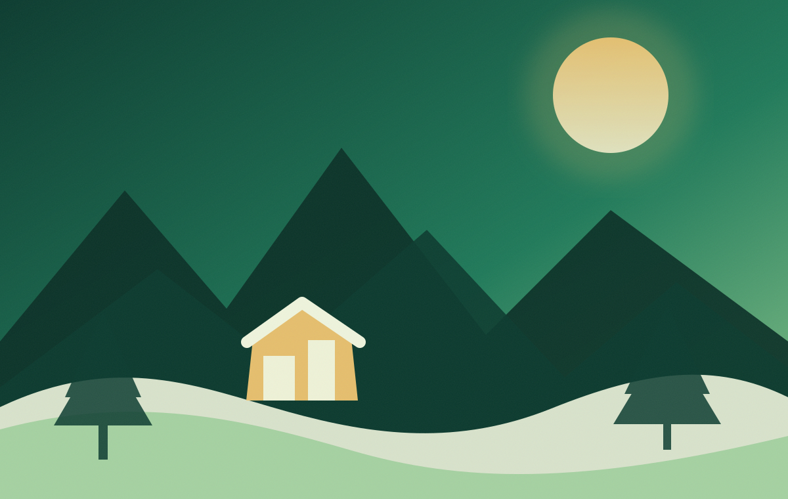
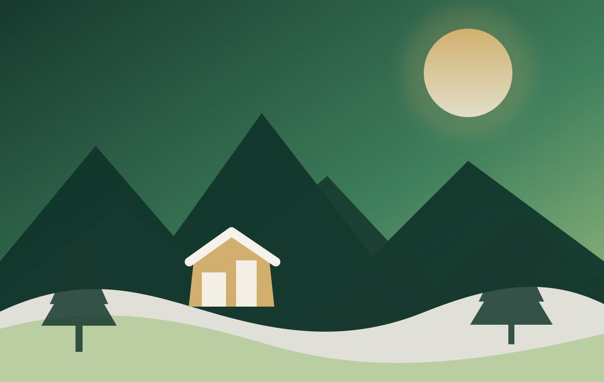
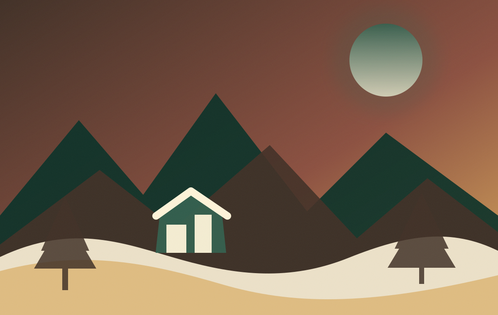
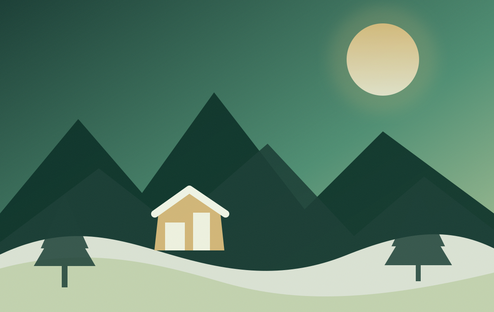

Desa Wisata Patakbanteng
Jelajahi Wisata
Daftar destinasi Patakbanteng berdasarkan kategori, lokasi, harga tiket, dan jam operasional.
Kategori wisata
Pilih pengalaman yang sesuai
Gunakan kategori atau pencarian untuk mempersempit daftar destinasi.


Sanggar Budaya Desa
Ruang pertunjukan, latihan kesenian, dan dokumentasi tradisi.

Contoh detail destinasi
Struktur halaman detail
Setiap destinasi memiliki gambar utama, galeri, aktivitas, fasilitas, harga, jam, lokasi, peraturan, serta kontak pengelola.
Contoh destinasi aktif
Panorama Puncak Prau
Deskripsi lengkap destinasi ditempatkan di sini. Konten akhir perlu ditulis berdasarkan data dan dokumentasi pengelola.
KategoriWisata alam
Harga tiketRp—
Jam operasional—
LokasiBuka melalui Google Maps
1
Aktivitas
Menikmati panorama, fotografi, dan aktivitas sesuai ketentuan pengelola.
2
Fasilitas
Daftar fasilitas harus diisi setelah survei lapangan.
3
Peraturan
Jaga kebersihan, keselamatan, dan hormati ketentuan setempat.